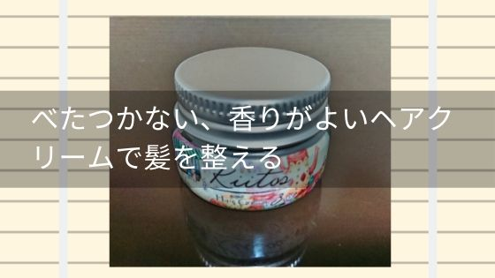

べたつかない、香りがよいヘアクリームでスタイリング
キートス ヘアクリーム 3 を使った感想とレビューです。
髪を整えるスタイリング剤（整髪料）。何を使ってよいか悩みますよね。
私はキートス ヘアクリームを使っています。
手軽に良い香りをつけれるところが一番のお気に入りのポイントです。
この香りは気持ちがすーっと楽になりリラックスできる癒しの香りです。
心が落ち着き、脳が穏やかになっていくのを感じます。
次にいいと思っているのはべたつかないところです。
このヘアクリームは美容室でも導入されているスタイリング剤です。
導入している美容室のスタイリストさんに話を聞くと植物オイルによって保湿の効果が高いヘアクリームとのことでした。
今回は、私が実際に使ってみた感想とレビューをチェックしていきたいと思います。
スタイリング力はどれくらいなの？
このヘアクリームは0～8までの種類があり数字が大きいほどスタイリング力が強力になります。
例えば"0"だとスタイリング力は全くなく、整髪料としての役割である髪のパサつきを抑え保湿や香りつけのみを行いたい方用となっています。
私が使っているのは"3"です。スタイリング力はどちらかといえば弱いほうで柔らかめで自然な感じに仕上げることができます。
ふわっと少しだけアクセントをつけたい人にぴったりです。
ちゃんとセットしてボリュームをつけたいと考えている場合はもっと大きい数字を選んだほうが良いですね。
他に特徴はある？
なめらかな手触りでよく伸びるので髪につけやすいです。
落とすときもシャワーで簡単に落ちてくれるので楽を追い求めている私にとってはとても助かっています。
またつけすぎることによる失敗もありません。なぜなら髪によくなじみべたつかないので多めにつけてもふわふわ感をだせます。
使い方は？
手のひらに少量取ってからいい感じに伸ばします。根本につけて中間、毛先の順番になじませてふわっとさせます。
つけるコツは根本から上のほうへ揉むように手を動かしながらつけることです。
べたつかないのでふんわり感を意地させることができて良いです。

まとめ
なんといってもやっぱり一番良いところは香りです。
心が楽になる良い香りに癒されるのでぜひ使ってみてください。
べたつかないところもおすすめですよ。